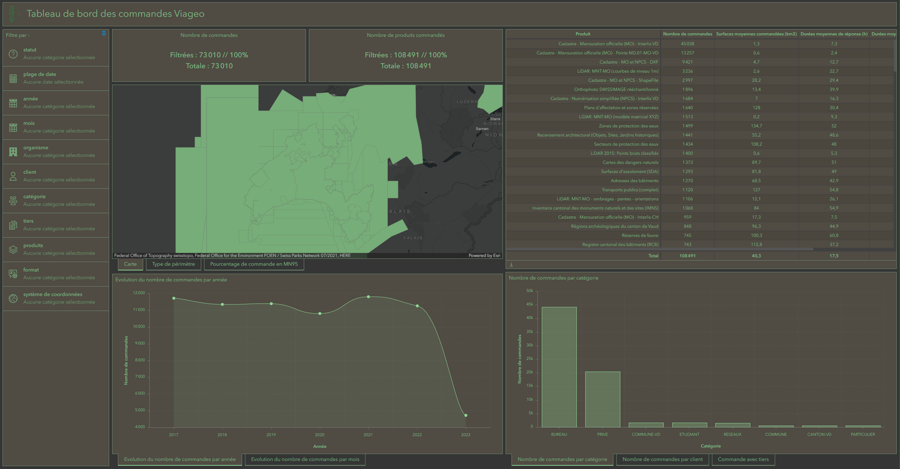

Dashboard Viageo
#FME
#ArcGIS Pro
#Dashboard

Contexte
La DCG est le service de l'État de Vaud chargé de l'extraction des commandes via Viageo. Une volonté de monitorage interne a émergé afin de mieux piloter l'activité.
Objectifs
Ce projet avait pour but de :
- suivre l'évolution des produits géomatiques devant être remplacés par de nouveaux (ex. cadastre DXF vers Interlis)
- détecter d'éventuels bugs lors de l'extraction des données, susceptibles d'allonger les délais d'attente pour les clients
- analyser diverses statistiques afin d'appuyer la prise de décisions
Rôle
Ce projet a été mené de manière autonome. Je me suis occupé de l'automatisation de l'extraction et du traitement des données, puis j'ai conçu un outil de visualisation de statistiques dynamiques.